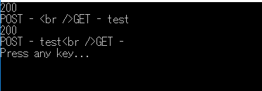

[C#] HttpWebRequestを利用してウェブページを読み込みする方法
こんにちは。明月です。
この投稿はC#のHttpWebRequestを利用してウェブページを読み込みする方法に関する説明です。
我々がプログラミングをする時にウェブのオブジェクトを読み込みが必要な時があります。例えば、ブログのrssあるいはsitemapのxmlを読み込みするかまたはウェブページの情報を取得する必要な時です。
でもHttpWebRequestはウェブページだけ読み込むことでスクレイピングとは意味が違います。スクレイピングはウェブのレンダリング、つまり、Javascriptの動的に処理されたデータを読み込むデータを取得することです。
HttpWebRequestはウェブレンダリングがされてない純粋なページの要素データを読み込むことです。
Httpプロトコールは単純なソケット方法で要請(Request)と応答(Response)が終わればソケット接続を終わらせる流れです。
プロトコールの中でヘッダを定義して要請すればそのヘッダ値に合わせて応答することがHttpプロトコールです。
Httpプロトコールはソケットでたくさん使うオブジェクトです。それでC#にはHttpWebRequestのクラスがあってそれを簡単に接続してデータを取得できるようになっています。
using System;
using System.Text;
using System.IO;
using System.Net;
using System.Net.Http;
namespace Example
{
class Program
{
// HttpRequestを実行してウェブページからHtmlを取得する関数
public static string GetRequest(String url, HttpMethod method, object param = null)
{
// パラメータがある場合、データを匿名クラスで受け取るのでReflectionを利用してデータを読み込む。
if (param != null)
{
// Stringバッファ
var parameter = new StringBuilder();
// 「パラメータキー=パラメータ値&パラメータキー=パラメータ値」の形で作成する。
foreach (var p in param.GetType().GetProperties())
{
// バッファにデータがあれば「&」をつける。
if (parameter.Length > 0)
{
parameter.Append("&");
}
// 「パラメータキー=パラメータ値」の形で作成する。
parameter.AppendFormat("{0}={1}", p.Name, p.GetValue(param));
}
// パラメータをStringタイプに変換
param = parameter.ToString();
}
else
{
// パラメータをStringタイプに変換
param = "";
}
// Http methodがGETタイプの場合、パラメータをurlアドレスに後につける。
if (HttpMethod.Get.Equals(method))
{
// urlがホストだけなら「?」をつける。
if (url.Contains("?"))
{
url += "&" + param;
}
else
{
// urlでパラメータがある場合、「&」で連結する。
url += "?" + param;
}
}
// urlを通ってHttpWebRequestクラスを生成する。
HttpWebRequest request = (HttpWebRequest)WebRequest.Create(url);
// ヘッダのメソッドを定義する。
request.Method = method.ToString();
// ヘッダのContentTypeを定義する。
request.ContentType = "application/x-www-form-urlencoded";
// requestのプロパティがないヘッダの場合にIndexerタイプ(Dictionaryみたいな文法)で設定できる。
// プロパティがあるヘッダの場合、下記とおりに設定するとエラーが発生する。
request.Headers["Upgrade-Insecure-Requests"] = "1";
// Http methodがPOSTタイプの場合
if (HttpMethod.Post.Equals(method))
{
// Stringをbyte[]タイプに変換する。
byte[] byteArray = Encoding.UTF8.GetBytes((string)param);
// ヘッダのコンテンツ長さを設定
request.ContentLength = byteArray.Length;
// ヘッダのストリームを取得する。
using (Stream dataStream = request.GetRequestStream())
{
// パラメータを設定
dataStream.Write(byteArray, 0, byteArray.Length);
}
}
// Httpプロトコールに接続してresponseを受け取る。
using (HttpWebResponse response = (HttpWebResponse)request.GetResponse())
{
// プロトコールの応答コードを受け取ってコンソールに出力する。(200なら正常)
Console.WriteLine((int)response.StatusCode);
// ストリームで応答結果を受け取る。
using (StreamReader reader = new StreamReader(response.GetResponseStream()))
{
// すべてStringデータを返却する。
return reader.ReadToEnd();
}
}
}
// 実行関数。
static void Main(string[] args)
{
// localhostにGetタイプで接続する。パラメータは「param=test」だ。
// http://localhost/index.php?param=test
String html = GetRequest("http://localhost/index.php", HttpMethod.Get, new { param = "test" });
// 結果をコンソールに出力
Console.WriteLine(html);
// localhostにPostタイプで接続する。パラメータは「param=test」だ。
html = GetRequest("http://localhost/index.php", HttpMethod.Post, new { param = "test" });
// 結果をコンソールに出力
Console.WriteLine(html);
Console.WriteLine("Press any key...");
Console.ReadKey();
}
}
}
上のソースをテストするようにPHPファイルを作成しましょう。
<?php
// NOTICEログは表示しない。
error_reporting(E_ALL & ~E_NOTICE);
// POSTタイプの場合、POST値を出力
echo "POST - ".$_POST["param"];
echo "<br />";
// GETタイプの場合、パラメータのデータを出力
echo "GET - ".$_GET["param"];
?>

「200」は応答コードでGetRequest関数の中でresponse.StatusCodeをコンソール出力したことです。「200」は正常です。
私がGetRequest関数を二回に呼び出したので、二つの結果を受け取りました。
始めはGETタイプで接続したので、GETの変数に「test」というデータがあります。
二つ目はPOSTタイプで接続したので、POSTの変数に「test」というデータがあります。
ここまでC#のHttpWebRequestを利用してウェブページを読み込みする方法に関する説明でした。
ご不明なところや間違いところがあればコメントしてください。
- [C#] 非同期ソケット通信(IOCP)-APMパターン2020/05/18 18:45:37
- [C#] 非同期ソケット通信(IOCP)-EAPパターン2020/05/15 19:31:02
- [C#] NPOIを利用してExcelを読み込んで出力する方法2020/05/08 10:43:52
- [C#] NPOIライブラリを利用してエクセルファイルを生成する方法2020/05/07 01:49:01
- [C#] Geckoライブラリを利用してウェブスクレイピングする方法2020/05/05 00:52:26
- [C#] PDFを作成する方法(iTextSharp)2020/05/03 10:22:40
- [C#] シリアライズ(Serialization)をする方法2020/04/30 19:32:04
- [C#] dynamicタイプの動的パラメータ-DynamicObject(WinFormでASP.MVCのViewBagオブジェクトを使用する方法)2020/04/29 22:41:32
- [C#] Stringの補間式(interpolation)2020/04/27 20:39:57
- [C#] Newtonsoft.JSONライブラリを利用してJsonデータ構造を扱う方法2020/04/23 20:19:53
- [C#] EMailを送信する方法(System.Net.Mail)2020/04/22 19:00:42
- [C#] ini環境ファイルを使う方法2020/04/22 00:09:39
- [C#] 環境設定ファイルを扱う方法(System.Configuration)2020/04/20 19:37:57
- [C#] Reflectionを利用してクラス複製する方法2020/04/17 00:34:33
- [C#] XMLをXPathを利用してデータを取得する方法2020/04/16 00:47:17
- [Python] 10. モジュールとパッケージ(import)2020/06/08 19:07:50
- [Python] 09. 例外処理する方法2020/06/05 17:11:47
- [Python] 08. ジェネレータ(Generator)2020/06/04 18:46:08
- [Python] 07. globalとnonlocal2020/06/03 20:34:49
- [Python] 06. 関数(function) - インライン関数、callbak、ラムダ(lambda)そしてクロージャ2020/06/02 20:51:22
- [Python] 05. コンプリヘンション(Comprehension)を使用する方法2020/06/01 19:38:58
- [Python] 04. 制御文(if, while, for, break, continue)とインデント2020/05/29 21:09:08
- [Python] 03. Pythonでリスト(list)とタプル(tuple)、そしてディクショナリ(dictionary)、セット(set)2020/05/27 18:49:08
- [Python] 02. データタイプ、変数宣言そしてコメントする方法2020/05/26 18:16:52
- [Python] 01. Python3をインストールする方法(Anacondaインストール)2020/05/25 19:02:44
- [Java] HttpConnectionを利用してウェブページを取得する方法2020/05/20 23:53:24
- [Java] Jsoupを利用してXMLファイル(HTML)を扱う方法2020/05/19 19:32:21
- [C#] 非同期ソケット通信(IOCP)-APMパターン2020/05/18 18:45:37
- [C#] 非同期ソケット通信(IOCP)-EAPパターン2020/05/15 19:31:02
- [C#] ソケット(Socket)通信をする方法2020/05/13 17:37:13